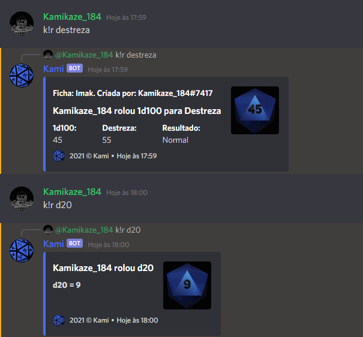
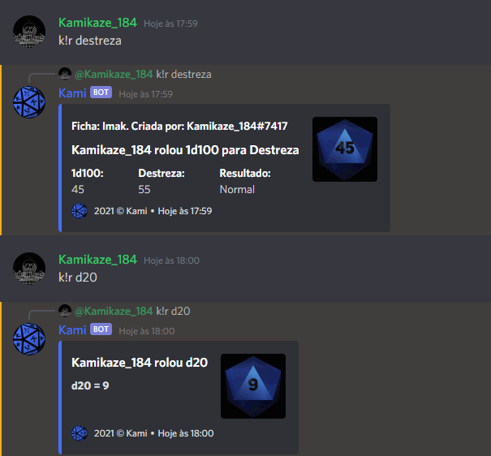

Kami - Discord BOT |
O Kami é um BOT para o aplicativo de mensagens Discord, criado por mim em 29 de maio de 2020, como uma forma de aprender mais sobre programação durante a quarentena, ele é feito em Javascript com banco de dados MySQL e tem sua principal função como ajudante em mesas de RPG online servindo principalmente para criar fichas de personagem e rolar dados.
Atualmente, O Kami, é meu princial projeto, inicialmente feito em Python, começou como um projeto bem simples somente para os RPG's que eu mesmo jogava, porém, com o passar do tempo, acabou crescendo. após alguns problemas, o BOT foi migrado para Javascript e seu banco de dados foi migrado de MySQL para Firestore Database, porém, devido a limitações do Firestore, foi migrado de volta para MySQL alguns meses depois.
Mais informações sobre o Kami podem ser encontradas clicando aqui
 
